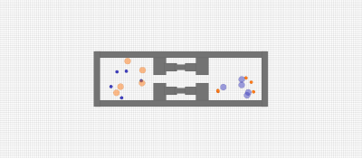

Visual Odometry with Spot Robot
As part of my graduate study, I worked on visual odometry with Spot using ORB-SLAM 3.
I am a Ph.D. Candidate in Computer Science at the University of Minnesota where I am advised by Prof. Maria L. Gini. I received my bachelor’s degree in Electrical and Computer Engineering from Addis Ababa Institute of Technology. My interests include artificial intelligence, machine learning, robotics, computer vision, and natural language processing.
As the lead of the Multi-Agent Research Group at the University of Minnesota, I oversee a dedicated team specializing in multi-agent systems. Our research focuses on distributed decision-making for autonomous agents and robots, covering areas such as task allocation, exploration of unknown environments, teamwork for search and rescue, and navigation in dense crowds. We are committed to advancing artificial intelligence through innovative research and collaboration.
Presented at the MASSpace'24 at AAMAS 2024.
Presented at the ARMS at AAMAS 2024.
Presented at the IEEE International Conference on Intelligent Robots and Systems Workshop 2023.
Presented at the IEEE International Conference on Intelligent Robots and Systems Workshop 2023.
Presented at the AAAI International Workshop on the Social Impact of AI for Africa.
Presented at the ACM International Conference on Intelligent User Interfaces 2022.
Here are some of the projects I've worked on, spanning robotics, artificial intelligence, and federated learning.
As part of my graduate study, I worked on visual odometry with Spot using ORB-SLAM 3.
A simulation setup for underwater robotic mechanisms using a UR5 robotic arm, focused on histotripsy treatment. This project involves modeling the interaction of the robot's end-effector with a water-like environment and tackling challenges like buoyancy forces and water resistance.

This project focuses on using brain activity and physiological signals to recognize emotions in conversations.
This project explores federated learning using the Flower framework for traffic flow prediction.

This project focuses on utilizing the D* Lite algorithm for path planning in mobile robotics.
A classic pinball game with interactive flippers, bouncy balls, and engaging sound effects. Score points by hitting obstacles and keeping the ball in play.
This work explores the application of multiple UAVs in precision agriculture.
This project demonstrates an interactive spider animation with dynamic leg movements using inverse kinematics and canvas rendering.
A dynamic 3D simulation of a scorpion interacting with a customizable environment. The simulation includes animated legs, tail movements, and a responsive, interactive design built using Processing.
This project explores federated learning using the Flower framework for traffic flow prediction.
A dynamic 3D simulation showcasing cloth physics and fluid interactions, leveraging gravitational forces, spring-damping mechanics, and SPH fluid dynamics. Includes interactive features and responsive camera controls for a rich simulation experience.

2024 – Present
Data and Command Handling (CDH) for Lunar Exploration Mission, leading subsystem trade studies and Preliminary Design Review (PDR) for the lunar mission.
2023 – 2024
Partnered on drill data analysis for fault detection and autonomy using ML techniques.
2022 – 2024
Developed multi-agent systems and MARL models for autonomous robots. Published work on navigation with Kinova and Boston Dynamics Spot.
2022 – 2024
Taught Robotics and AI courses, mentoring students in reinforcement learning and ROS-based projects.
2022
Integrated enterprise systems with S&D. Trained over 100 users and optimized workflows for efficiency.
2021
Analyzed physiological signals (PPG, GSR) for emotion recognition using machine learning.
2019 – 2020
Conducted bottleneck analysis of RL algorithms, optimizing CPU usage and execution time.
As a representative of the Minnesota Robotics Institute (MnRI), I have participated in various community outreach events, promoting robotics and STEM education.
Engaged students in robotics activities to broaden their perspectives on technology and innovation.
Represented MnRI at the event, collaborating with the Afghan Refugee community to promote STEM education among refugees.
Discussed the latest advancements in robotics and automation technologies while representing MnRI at the conference.
Collaborated with the Minnesota African Women's Association to introduce young women to technology and robotics through hands-on activities.
Organized a camp featuring Ozobots and Simple Circuits to provide engaging STEM learning experiences for children.
During my time at the Empathic Computing Lab, I explored how physiological signals, such as PPG and GSR, change in response to various emotional stimuli. Using both machine learning and deep learning models, I worked on recognizing emotions in human conversations.
This research culminated in a presentation at the International Conference on Intelligent User Interfaces (IUI) 2022, showcasing our findings on emotion recognition in conversations using brain and physiological signals. You can access the published paper here.
In high-risk, high-cost environments like Mars, it is essential for robotic agents to anticipate and address potential issues before they escalate into mission-critical failures. The Regolith and Ice Drill for Exploring New Terrain (TRIDENT) is a rotary percussive 1-meter class drill developed by Honeybee Robotics for NASA. TRIDENT is slated for deployment in lunar missions such as the Polar Resources Ice Mining Experiment-1 (PRIME-1) and the Volatiles Investigating Polar Exploration Rover (VIPER), both scheduled for launch in 2024.
To enhance TRIDENT's operational reliability, we analyzed logged data from previous field tests to better understand potential drilling faults that the system may encounter. By applying time series analysis techniques, we identified trends in the data during fault occurrences. Additionally, we employed change point analysis and other machine learning methods to predict potential faults, enabling TRIDENT to respond proactively to drilling anomalies.
This research contributes to the development of autonomous drilling systems capable of maintaining mission integrity in extraterrestrial environments. By equipping TRIDENT with advanced fault prediction and response capabilities, we aim to ensure its effectiveness in upcoming lunar missions and future applications on Mars.
Analyzed TRIDENT drill data with NASA Ames to identify fault patterns using time series and machine learning techniques, enhancing fault prediction for autonomous systems in high-risk environments.
You can find the paper published at the MASSpace’24 Workshop at AAMAS 2024.
@inproceedings{boelter2024understanding,
title={Understanding Drill Data for Autonomous Application},
author={Boelter, Sarah and Temesgen, Ebasa and Glass, Brian J and Gini, Maria},
booktitle={Proceedings of the MASSpace'24 Workshop at AAMAS 2024},
year={2024},
location={Auckland, New Zealand}
}
Optimal Reciprocal Collision Avoidance (ORCA) is a foundational algorithm in robotics for enabling collision-free navigation in multi-agent systems. By combining ORCA with Reinforcement Learning (RL), agents gain the ability to adapt to dynamic environments, making it particularly effective in dense crowds and unpredictable scenarios.
This integration has been pivotal in simulations of pedestrian dynamics, robot navigation, and cooperative multi-agent systems. Through advanced RL algorithms, agents learn to optimize their paths, maintain safety, and achieve goals while interacting with other entities in real-world-inspired environments.
We integrated ORCA with Reinforcement Learning to enable agents to navigate dense crowds autonomously. This involved designing and fine-tuning RL algorithms to enhance agents' adaptability to dynamic and unpredictable crowd behaviors.
To improve scalability, I developed and optimized the simulation environment using the Vectorized Multi-Agent Simulator (VMAS). This framework streamlined simulations and supported high-performance training of RL agents in multi-agent scenarios.
My work focused on ensuring efficient test environment development, parameter tuning for RL models, and enhancing scalability, providing a robust foundation for research in multi-agent reinforcement learning.
Our team developed an advanced autonomous navigation system by leveraging OpenAI's CLIP model. This integration enhances the robot's ability to understand and execute natural language instructions, enabling seamless navigation in complex and dynamic environments.
The project focuses on empowering robots to interact more intuitively with human operators by interpreting instructions such as "Find the red chair" or "Navigate to the nearest exit," significantly improving versatility and user experience in various scenarios.

(2024-2025) I am serving as part of the Computer Science Inclusiveness, Diversity, Equity, and Advocacy (CS-IDEA) Committee in computer science.
(2023-2024) Serving as Treasurer, I manage financial operations to support initiatives that enhance the graduate student experience in the Computer Science department.
(2024-2025) In this role, I facilitate communication and organize events to foster a supportive and inclusive environment for graduate students in the Computer Science department.
Mentor at the Institute for African-American Mentoring in Computing Sciences (IAAMCS), supporting African-American students in computing sciences through guidance and advocacy.